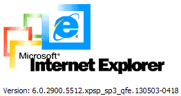
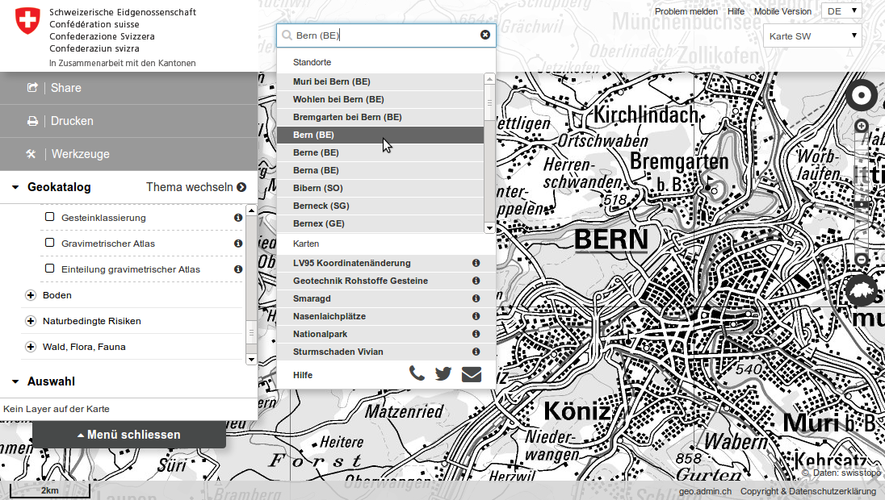

OpenLayers 3
Towards version 3.0.0 final
Marc Jansen, jansen@terrestris.de, terrestris GmbH & Co. KG
Table of contents
- About …
- OpenLayers now and then
- Examples
- v3.0.0
- Closing note
Marc Jansen


- Developer and project manager
- Core developer of
- OpenLayers / ol3
- GeoExt / GeoExt2 / GXM
- SHOGun
- PSC member of GeoExt & SHOGun
- Author 'OpenLayers' (German)
- OSGeo Foundation Charter Member
jansen@terrestris.de
@marcjansen
@selectoid
terrestris
- terrestris.de
- OpenSource GIS from Bonn, Germany
- Development, Projects & Support/Teaching
- Consulting, Planning, Implementation & Maintenance
About this talk
- Highlights
- Examples
- Live-Demos
- Code-Snippets
OpenLayers now and then
OpenLayers
-
Very widely used library to build interactive
web maps.
- v. 2.0 ⇒ nearly 8 years old

OpenLayers
- 13 Point-releases
- > 6.000 commits, ~100 contributors
- Feature rich:
- Layertypes,
- Controls,
- Formats,
- Mobile …


But…
- ~8-year-old architecture
- Modern Web-Technologies
- Moderne Browsers

…therefore…
We want a new OpenLayers!
ol3
- in development for ~ 2 years
- partly crowd-funded
- up to now 4 alpha, 5 beta & 2 gamma releases
- ol3js.org
- Google-Group / mailinglist
- Github repository
What's new?
- de facto: Everything
- Complete rewrite-from-scratch
- Tests and data have been ported over
What's new?
- Google Closure Library (Gmail, Google Maps)
- Google Closure Compiler
- jsdoc3
- WebGL
- Mobile first / from start
- Styling only via CSS
- build.py
Closure Compiler
ol.format.XMLFeature.prototype.readFeatures = function(source) {
if (ol.xml.isDocument(source)) {
return this.readFeaturesFromDocument(/** @type {Document} */ (source));
} else if (ol.xml.isNode(source)) {
return this.readFeaturesFromNode(/** @type {Node} */ (source));
} else if (goog.isString(source)) {
var doc = ol.xml.load(source);
return this.readFeaturesFromDocument(doc);
} else {
goog.asserts.fail();
return [];
}
};
l.Ga=function(a){return Kn(a)?fo(this,a):Nn(a)?this.$b(a):la(a)?(a=Rn(a),fo(this,a)):[]}; 
What stays the same?
- Usable
- Modern
- Fast
- Extendable
What stays the same?
- Understandable
- Conforming to standards
- Cross-Anything
- Well documented
- Reliable
Examples
Hello, Welt
Code
var map = new ol.Map({
layers: [
new ol.layer.Tile({
source: new ol.source.OSM()
})
],
target: 'map',
view: new ol.View({
center: [0, 0],
zoom: 2
})
});OpenLayers 2.x
-
1 ×
OpenLayers.Map-
n ×
OpenLayers.Layer.Xxx -
n ×
OpenLayers.Control.Yyy
-
n ×
ol3
-
1 ×
ol.Map-
1 ×
ol.View -
n ×
ol.interaction.Zzz -
n ×
ol.control.Yyy -
n ×
ol.layer.Xxx-
1 ×
ol.source.Xxx
-
1 ×
-
1 ×
50.000 coordinates
Code
var vectorSource = new ol.source.IGC({
urls: [
'data/igc/ClementLatour.igc' // etc.
]
});
var styleFunction = function(feature, resolution) {
// ...
return styleArray;
};
var layer = new ol.layer.Vector({
source: vectorSource,
styleFunction: styleFunction
});
Drag & Drop / Formats
Highlights
Performance Replay-API
786.433
Points!
Performance R-Tree
 https://github.com/mourner/rbush
https://github.com/mourner/rbush
pre-/postcompose API
v3.0.0
TODO
- API review
- API can and will change
- API stability
- API docs
- Custom-build-Tool
- v3.0.0 is near
Ready for production
 map.geo.admin.ch , CodeWhen will it ship?
Milestone 3.0.0 is due …
… 2014-08-21 …
… ± n months 😇
Thank you
Questions / Remarks?
Imprint
- Author: Marc Jansen, terrestris GmbH & Co. KG, jansen@terrestris.de
- License: CC BY-SA 4.0
- This talk is a derived work of the talk "OpenLayers 3 — Einführung, Verwendungsbeispiele und technische Highlights" by Marc Jansen & Andreas Hocevar, held at the FOSSGIS 2014.
- Slideshow (HTML5)
- Slides (PDF)